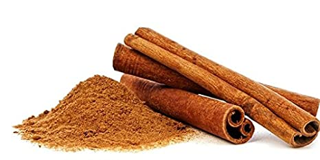

दालचिनी विषयी माहिती

प्रस्तावना
दालचिनी हे भारतातील महत्वाचे पिक आहे. दालचिनी च्या झाडाची साल दालचिनी म्हणून मसाल्यात वापरली जाते. तर या
झाडाच्या पानांचा उपयोग देखील तमालपत्रे म्हणून मसाल्यात करतात.
दालचिनीच्या सालातील व पानातील अर्क काढून त्याचा
मसाल्यासाठी तसेच औषधे, अत्तर, व्हॅनिला, इत्यादीच्या उत्पादनात उपयोग केला जातो.
हवामान व जमीन
दालचिनी हे उष्ण कटिबंधातील झाड आहे. उष्ण व दमट हवामान या झाडास चांगले मानवते. या हवामानामुळे झाडाची वाढ व सालीची
प्रत (दालचिनीची प्रत) चांगली राहते.
या झाडास दिवसाचे सरासरी तपमान २७ अंश से. ग्रे. असणे आवश्यक असते. १० अंश से.
ग्रे. खाली तर ३५ अंश से. ग्रे. वर तापमान हे या पिकास हानिकारक ठरते. २००० ते २५०० मि. मी. पाऊस व त्याची व्यवस्थित
विभागणी महत्वाची आहे.
या झाडाला देखील विरळ सावलीची आवश्यकता असते. त्यामुळे नारळ, सुपारीच्या बागेतही हे पीक घेऊ
शकतो. परंतु अति सावलीमुळे दालचिनीची प्रत बिघडते आणि झाड देखील कीड रोगास बळी पडते.
मध्यम प्रतीच्या हवामंत ह्या
पिकाची लागवड स्वतंत्रपणे उघड्या जमिनीवर देखील करता येते.
इतर मसाला पिकांपेक्षा हे पीक कणखर असल्यामुळे बहुतेक सर्व जमिनीत चांगले येते. परंतु गाळाची अधिक प्रमाणात सेंद्रिय
पदार्थ असलेली जमीन अधिक मानवते.
थोडक्यात ज्या हवामानात नारळ, सुपारी यासारख्या फळझाडांची लागवड होते त्या हवामान
हि झाडे अगदी सहजरीत्या येऊ शकते.
अभिवृध्दी
दालचिनीची लागवड बियांपासून रोप करून तसेच निवडक झाडांच्या गुटी कलमाने करता येते.
गुटी कलम करण्यासाठी पेन्सिलीच्या
जाडीची मागील हंगामातील किंवा चालू हंगामाची फांदी वापरावी.
निवडलेल्या फांदीवर चाकूने काप घेऊन १ से. मी. जाडी इतकी
रुंद साल काढावी आणि त्यावर शेवाळ किंवा लाकडाचा भुसा पाण्यात भिजवून साल काढलेल्या जागी लावावी आणि पॉलीथीनच्या
कापडाने बांधावे.
पावसाळ्याच्या दीड ते दोन महिन्यात मुळ्या फुटून गुटी कलम तयार होते. इतर हंगामात तीन ते साडेतीन
महिने लागतात.
पूर्वमशागत
नारळाच्या बागेत लागवड करायची असल्यास नारळाच्या दोन्ही बाजूस दोन दोन मीटर अंतर सोडून खड्डे खोदावे.
दालचिनीची सलग
लागवड करावयाच असल्यास दोन ओळीत आणि दोन ओळीतील झाडात सव्वा मीटर अंतर ठेवून ६० से. मी. लांबी, रुंदी व खोलीचे खड्डे
खोदावे. खड्डे भरताना प्रत्येक खड्डयात २० किलो (दोन टोपल्या) शेणखत किंवा कंपोस्ट खत मिसळावे.
लागवड
जून, जुलै महिन्यात तयार केलेल्या खड्ड्यांच्या मध्यभागी दालचिनीची रोपे किंवा कलम लावावे. लागवड केल्या नंतर
पावसाचे पाणी बुंध्यात साठून राहणार नाही याची दक्षता घ्यावी.
जाती
कोकण कृषी विद्यापीठाने सन १९९२ मध्ये कोकण तेज हि एक जात शोधून प्रसारित केली आहे. हि जात पानांतील तसेच सालातील
तेल काढण्यासाठी चांगली आहे.
या जातीच्या दालचिनी मध्ये तेलाचे प्रमाण ३.२ टक्के, सिनामोल्डोहाईड ७०.२३ टक्के व
युजेनॉल ६.९३ टक्के आहे.
आंतरमशागत व निगा
रोपांस व कलमास काडीचा आधार द्यावा. पहिली एक-दोन वर्ष झाडास सावली करणे गरजेचे आहे. वर्षातून दोन वेळा तरी झाडाच्या
बुन्ध्यातील टन काढून बुंधे साफ ठेवावेत.
ऑगस्ट ते सप्टेंबर महिन्यात झाडाच्या बुंध्याभोवती माती खणून सैल करावी.
हंगाम व जमिनीच्या प्रकारानुसार पानाच्या पाळ्या द्याव्यात. मात्र रेताड जमिनीत उन्हाळ्यात दिवसा आड पाणी द्यावे.
खते
दालचिनीच्या झाडास पहिल्या वर्षी ५ कि. शेणखत किंवा कंपोस्ट, २० ग्रॅम नात्र (४० ग्रॅम युरिया), १८ ग्रॅम स्फुरद
(११५ ग्रॅम सिंगल सुपर फॉस्फेट), २५ ग्रॅम पालाश (४५ ग्रॅम म्युरेट ऑफ पोटॅश) द्यावे.
हि खताची मात्रा दरवर्षी अशाच
प्रमाणात वाढवावी व १० वर्षानंतर 20 किलो शेणखत किंवा कंपोस्ट, २०० ग्रॅम नत्र (४०० ग्रॅम युरिया), १८० ग्रॅम स्फुरद
(१ किलो १०० ग्रॅम सिंगल सुपर फॉस्फेट), २५० ग्रॅम पालाश (४२० ग्रॅम म्युरेट ऑफ पोटॅश) ही खते द्यावेत.
पीक सरंक्षण
लीफ मायनॉर या किडीपासून दालचिनीस उपद्रव होतो. त्यासाठी १० लीटर पाण्यात १० मि. ली. रोगार मिसळून फवारणी केल्याने
किडीवर नियंत्रण घालता येते तसेच या झाडांवर टक्का नावाच्या बुरशीजन्य रोगांचाही प्रादुर्भाव होतो.
1 टक्का बोर्डा
मिश्रणाची फवारणी करून या रोगावर नियंत्रण घालता येते.
काढणी व उत्पन्न
दालचिनीचे झाड लावल्या नंतर प्रथम तीन वर्षानंतर झाडांस आधार द्यावा लागतो. फेब्रुवारी ते मे महिन्यात जमिनिपासून २०
से. मी. उंचीवर मुख्य खोड कापावे.
झाडांच्या खोडावरील थोडी साल यावेळी काढता येते. झाड कापल्यामुळे खोडावर असंख्य
धुमारे (फांद्या) फुटतात. हे धुमारे सव्वा ते दीड मीटर वाढल्यानंतर फक्त टोकावर दोन-तीन फांद्या फुटतात.
साधारणपणे जानेवारी ते मे महिन्यात केव्हाही साल सुटते. धुमारे दोन वर्षाचे झाल्यानंतर ज्याची जाडी 2 से. मी. पेक्षा
अधिक जड आहे फक्त असेच धुमारे कापण्यापूर्वी चाकूच्या सहाय्याने साल खोडावरून सहज सुटी होत आहे याची खात्री करून
घ्यावी व त्यानंतरच धुमारे कापावे व फांद्यावरील साल लगेच काढावे.
कापलेल्या फांदीवरील पाने व कोवळ्या फांद्या काढून
टाकल्यानंतर चाकूचा उपयोग करून हलक्या हाताने साल काढून टाकावे. त्यानंतर धुमाराच्या दोन्ही बाजूवर चाकूने दोन उभ्या
चिरा माराव्यात आणि साल ओढून काढावे आणि ती उन्हात वळवावी. ४ ते ५ दिवसात साल काढण्याचे काम फेब्रुवारी महिन्यात
करावेत. फांद्या कापल्यानंतर त्याच दिवशी साल काढावे.
पाने वळवून त्यांचा मसाल्यासाठी उपयोग करतात. पानाचा उपयोग तेल
मिळवण्यासाठी करतात. दालचिनीच्या एका झाडापासून सुमारे १५० ते २०० ग्रॅम दालचिनी मिळते आणि 2 ते 2.५ किलो तमालपत्र
मिळते.